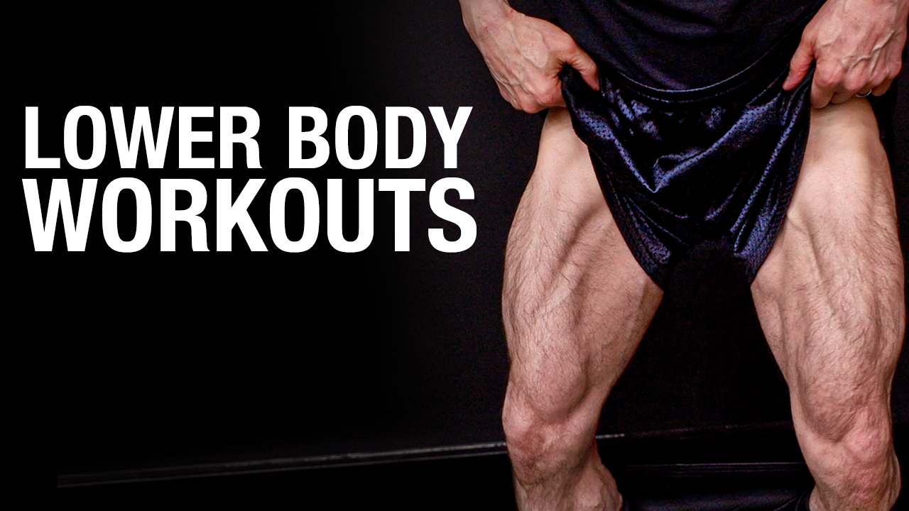
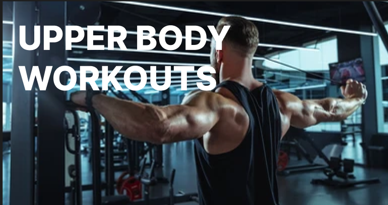
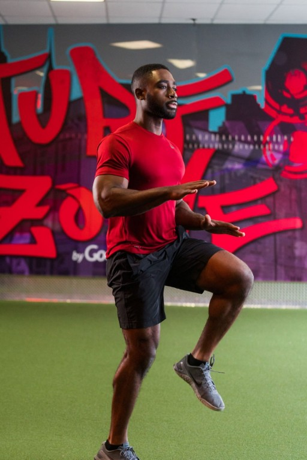
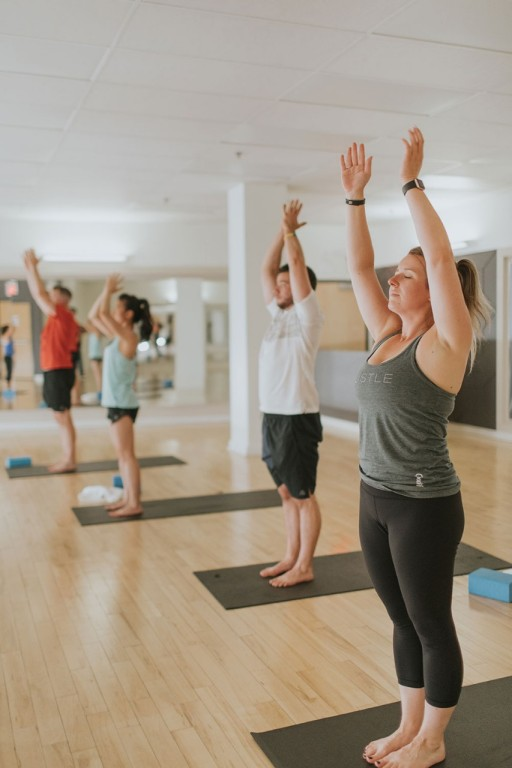
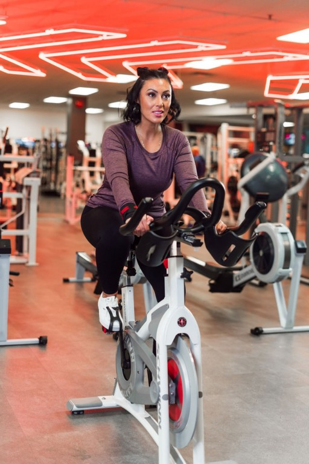

Unleash Your Potential
Transform your body and mind with our comprehensive workout programs designed for every fitness level.
Calculate Your BMI
Understanding your BMI can help you track your fitness journey. Use our simple calculator to get your BMI and see how your current weight aligns with your health goals.
Go to BMI CalculatorWorkout Timer
Take 2 minutes break for every rep and 4 minutes break for workout switch
Workout Categories


Frequently Asked Questions
-
What are the benefits of regular exercise?
Regular exercise improves cardiovascular health, strengthens muscles, boosts mental health, and helps in weight management.
-
How often should I work out?
It is recommended to engage in at least 150 minutes of moderate aerobic activity or 75 minutes of vigorous activity each week.
-
What is the best time of day to exercise?
The best time to exercise is when it fits into your schedule consistently. Some people prefer morning workouts, while others prefer evenings.
-
Do I need to warm up before a workout?
Yes, warming up increases blood flow to your muscles, reduces the risk of injury, and prepares your body for more strenuous activity.
-
How can I stay motivated to work out regularly?
Setting realistic goals, tracking progress, varying your workouts, and finding a workout buddy can help maintain motivation.
Workout Types & Benefits
Cardio

Heart Health: Regular cardio exercises help strengthen your heart, making it more efficient at pumping blood throughout your body.
Reduces Risk of Heart Disease: Engaging in cardio workouts can significantly reduce the risk of heart disease, hypertension, and other cardiovascular issues.
Lowers Blood Pressure: Cardio helps maintain healthy blood pressure levels, reducing strain on your heart.
Strength
Builds Lean Muscle: Strength training helps increase muscle mass, giving your body a toned and defined appearance. This lean muscle mass also boosts your metabolism.
Prevents Muscle Loss: As we age, muscle loss becomes a concern. Regular strength training combats this by maintaining and even building muscle mass.
Increases Bone Density: Engaging in strength training can increase bone density and strength, reducing the risk of osteoporosis and fractures.
Yoga

Enhances Flexibility: Regular practice of yoga poses stretches and lengthens muscles, increasing flexibility and range of motion.
Boosts Balance: Yoga improves your balance and coordination by strengthening stabilizer muscles, enhancing your ability to perform daily activities.
Builds Muscle Strength: Yoga poses require you to support your body weight in various ways, building muscle strength and endurance.
Cycling

Boosts Heart Health: Cycling is a great cardiovascular workout that strengthens your heart, reduces blood pressure, and lowers the risk of heart disease.
Enhances Circulation: Regular cycling improves blood circulation, ensuring oxygen and nutrients are delivered efficiently throughout your body.
Reduces Risk of Stroke: By maintaining healthy blood vessels and improving circulation, cycling can help lower the risk of strokes and other cardiovascular issues.